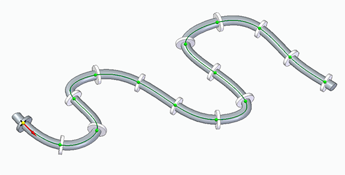
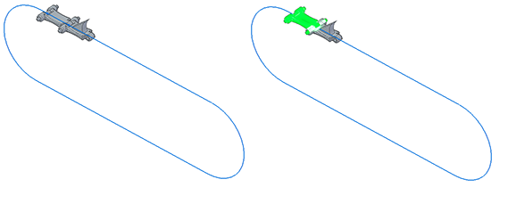
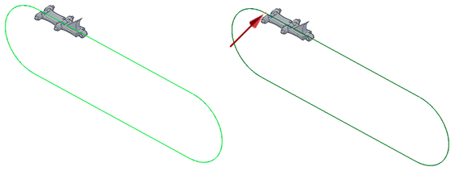
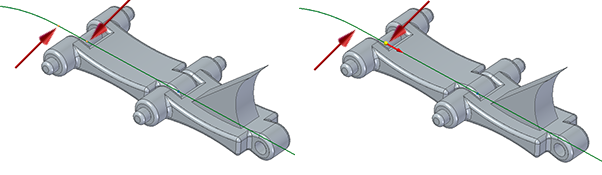
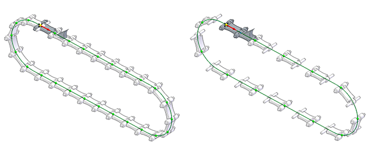
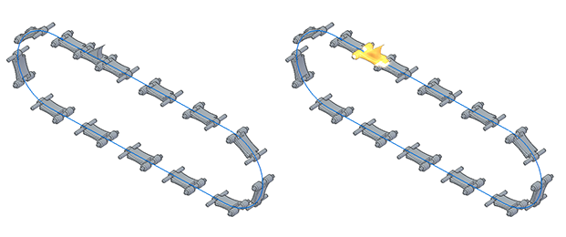
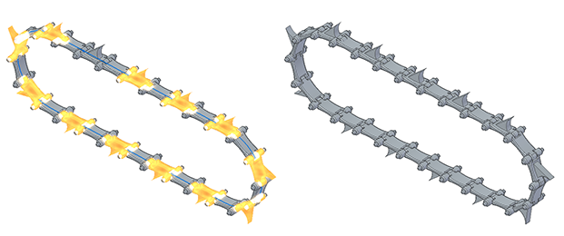

Along Curve pattern parts command (assembly)
The Home tab → Pattern group → Along Curve  is a pattern command used to pattern parts in an assembly. The Along Curve command is available in the synchronous part and sheet metal environments, ordered part and sheet metal environments, and assembly environments for patterning parts and features.
is a pattern command used to pattern parts in an assembly. The Along Curve command is available in the synchronous part and sheet metal environments, ordered part and sheet metal environments, and assembly environments for patterning parts and features.
The command works a little differently in each environment. This topic describes the command bar options for patterning parts in the assembly environment. The command bar options for the other environments are described here:

Do not confuse this command with the Features tab → Pattern group → Along Curve command that is used to pattern assembly features along a curve.
The Along Curve command provides options to control how the pattern is defined by identifying the parent to be patterned and the curve that the patterned parts follow. It then provides customizing parameters such as start point, offset, and transformation type, as well as occurrence count, spacing, and orientation.
After the pattern is created
Input curves must come from a single body and include the following:
Construction curves in parts
Part Edges
Sketches in assembly
Sketch curves in subassemblies
Sketch curves in parts
3D sketches
Items that can be patterned include the following:
Parts in the active assembly
Subassemblies in the active assembly
Patterns of parts in the active assembly
Frames
Pipes
Watch the following video to see how to create a chain pattern in an assembly.
Along Curve pattern assembly parts command bar
The Along Curve pattern part command bar options include:
- Select option
-
Click on the items to be patterned. The items can be selected before or after selecting the command. After selecting the parent items to be patterned, right-click or press Enter to accept.
- Select Curve Step

-
Click on an edge or a curve chain. Use the Select option to choose between a Single or a Chain. After selecting the edge or a curve chain, right-click or press Enter to accept.
- Anchor Point

-
Click on a curve endpoint to specify the anchor point. After selecting the curve endpoint, optionally flip the direction of the pattern, project a start point or enter an offset start point value along the curve. After selecting the endpoint, direction and offset, right-click or press Enter to accept.
- Flip Pattern Direction

-
This is a toggle command that flips the direction of the pattern along the curve.
- Project Point to Curve

-
Specifies the offset distance from the selected keypoint by projecting a point from an element in the assembly. Used to define the offset using the Select tool instead of entering a fixed offset value in the in Offset field.
- Flip Pattern Direction
- Spacing Step

-
Specifies the item spacing for the selected pattern type. After selecting the spacing pattern type, click Next to continue. The pattern types and associated options are:
- Fit
-
The Fit pattern type only supports a Count option. The count value is the total number of occurrences that will be placed for the selected curve length including the parent. The Spacing value is the resulting spacing value.
- Fill
-
The Fill pattern type only supports a Spacing option. The count value is the total number of occurrences that will be placed for the selected curve length including the parent. The Spacing value is specified.
- Fixed
-
The Fixed pattern supports a Count and Spacing option. The count value is the total number of occurrences that will be placed for the selected curve length including the parent. The Spacing value is specified.
- Chord Length
-
Chord Length Pattern Type is primarily used to create chain or chain-like components.
The Chord Length pattern supports a Count, Spacing, and Skip option. The count value is the total number of occurrences that will be placed for the selected curve length including the parent. The Spacing value is specified as the chord length between two points.
The Skip value only applies to patterns where the Chord Length Pattern Type is specified. The Skip count option is used when more than 1 parent is to be patterned. This allows multiple patterns in sequence along the curve chord.
The skip value is specified as a whole number where the value of 0 means all instances as specified in Count are shown starting with the parent. For a value of 1, alternate instances are created with the parent as the first instance. For a value of 2, every third instance is created with the parent as the first instance. This value can increment up to two less than the total value of the count.
See the Skip Count Example at the bottom of this page.
- Alignment Step

-
Specifies the item alignment for the selected pattern. This step has 5 options. After selecting the Occurrence Orientation, Rotation Type, any change in the Reference Point, any occurrences that are to be suppressed, or any occurrences that are to be added, select the Preview option to see the results of your selected options.
If you are satisfied with the results after clicking the Preview option, you can assign a Name to the pattern that will appear in the PathFinder after you click Finish.
Right-click on the pattern name in the PathFinder to access edit functions and other pattern functions such as the Drop command that disconnects the parts from the pattern.
- Occurrence Orientation
-
Sets the occurrence orientation for the pattern. You can customize the transformation and rotation of the pattern to better capture your design intent. You can specify that occurrences be placed in the pattern linearly, keeping the same orientations throughout the pattern. Or, you can specify a transformation that will change the orientations of the occurrences depending on the input curve or a specified plane. There are 5 options.
- Simple
-
Maintains the orientation of the parent. No Rotation Type option.

- Follow Curve
-
Orients parent to align with curve. Rotation Type: (1) Curve Position (2) Feature Position

- Follow Curve Chord
-
Orients parent to align with curve chord. Rotation Type: (1) Curve Position (2) Feature Position

- Using Surface
-
Orients parent to align with the Selection Type. Selection type options are Single (face), Chain (face or face chain), or a Body Rotation Type: (1) Curve Position (2) Feature Position.

- Using Plane
-
Orients parent to align with selected reference plane.

- Reference Point
-
Sets the reference point for the pattern. Used to change or move the anchor point.
- Suppress Occurrence
-
Suppresses selected pattern occurrences. Click on the green occurrence points (red arrow) to suppress or unsuppress individual occurrence instances.

- Insert Occurrence
-
Inserts pattern occurrences. Click on a key point to insert or edit an occurrence. You can click on an existing occurrence and add an Offset value or your can simply click on the path to add an occurrence at the selected location.
Skip Count Example
In the following example a chain of two different types of links is to be patterned into a loop. Assembly relationships for both links are made that will successfully follow the blue path. Then the first link of the chain and the two pins are selected to pattern.

The path is selected and then the origin indicated by the red arrow is identified.

The difference between the origin and the offset is shown here. The second image shows the direction from the offset position.

The first image shows how 26 links are patterned using a Pattern Type of Chord Length, a Count of 26 and a Skip of 0. The Occurrence Orientation is Follow Curve Chord, and the Rotation Type is Curve Position. The second image shows the result of incrementing the Skip count to 1 so every other instance is suppressed.

The completed pattern is shown. The second image shows how a second pattern is started using the saw-toothed link.

A Skip count of 1 is also used for the second pattern. The last image shows the results of creating a chain of two different links using two different patterns with a Skip count of 1.

How do I
Build a pattern of parts in an assemblyDrop an assembly pattern
Mirror components in an assembly
Copy and paste assembly components
Learn more
Pattern, mirror, and copy components in assembliesLook up more details
Pattern Parts commandPattern Parts command bar
Duplicate Component command
Pattern Parts command bar
Drop Pattern command
Remove Override Body command
Mirror Components command
Mirror Components command bar (Assembly)
Mirror component options (Assembly)
Pattern Along Curve (assembly)